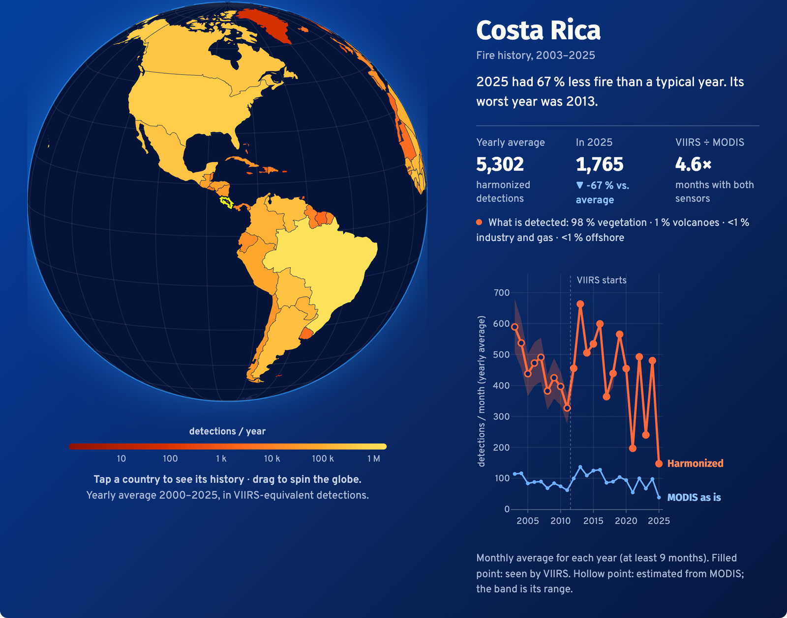
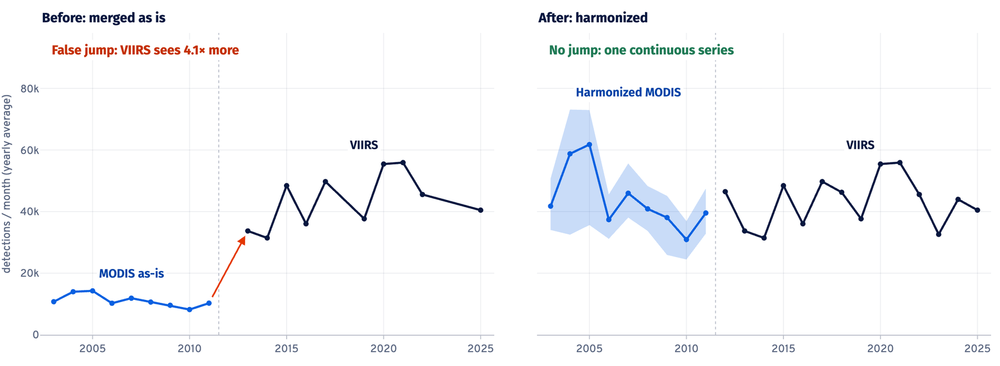
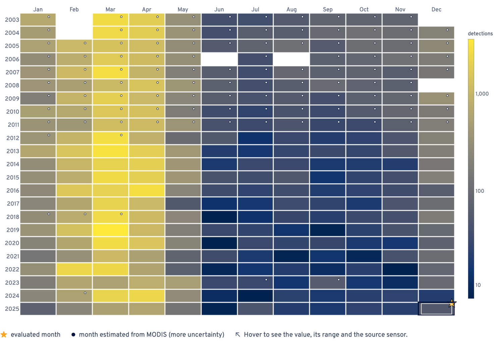
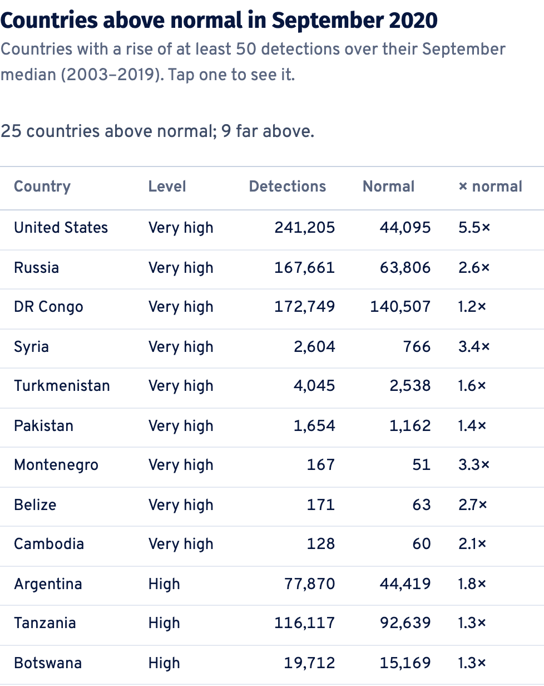
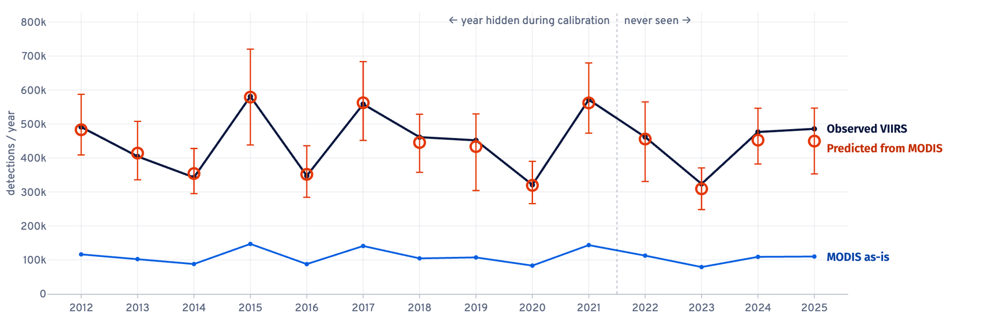
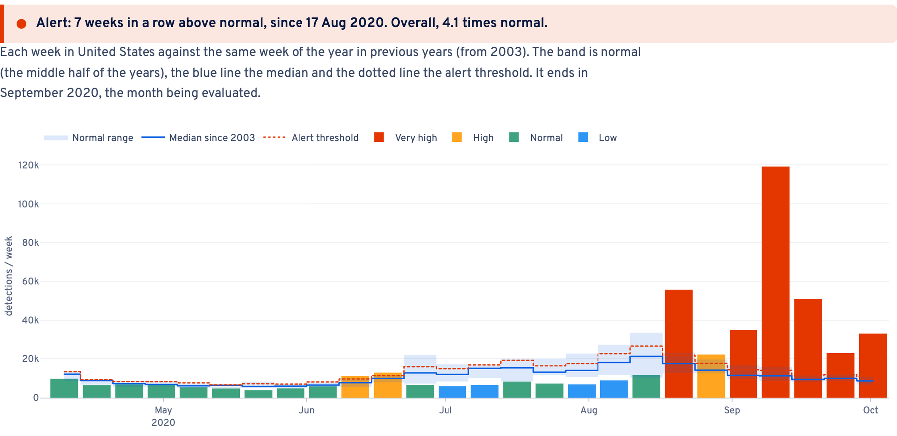

Challenge: Harmonization of MODIS and VIIRS Hot Spots
We join two generations of NASA fire sensors into one comparable 25-year series, so anyone can tell in seconds whether this week or month has abnormal fire in their area.

Screenshot of the app: tap a country on the globe to see its harmonized fire history.
more detections reported by VIIRS (since 2012) than by MODIS (since 2000) worldwide, in the months when both flew.
typical error per country and year if MODIS is merged as it is.
Suomi NPP stopped delivering data on 2 Nov 2026 and MODIS ends in 2027. The record needs a bridge to NOAA-20 and NOAA-21.

Screenshot of the app, United States, all hot spot types. Left: the two sensors merged as they are. Right: the same years harmonized into VIIRS-equivalent detections, with the uncertainty range of the estimated years.
What the challenge asks for: one comparable series, a burn calendar from the early 2000s to today, the current month against its historical median, near-real-time alerts, and the method, validation and uncertainty in plain view.
deaths a year are linked to smoke from landscape fires.
burned in 233 wildfires in Costa Rica by May 2026.
of gas flared worldwide in 2024, about 389 MtCO₂e. Not every hot spot is a wildfire.
of fire history in one series, free, built on NASA open data, in English and Spanish.
| Wildland firefighters and emergency committees | Bring crews, patrols and closures forward when the week or month is running above normal. | Alerts · Last few days |
| Public health | Warn schools, clinics and people with asthma before the smokiest weeks. | Calendar · Fire season |
| Protected areas, land managers, scientists | Measure whether prevention works year over year, without the false jump of 2012. | Trends · Downloads |
| Energy ministries and volcano observatories | Follow gas flaring and volcanic heat: the series covers vegetation, industry and gas, volcanoes and offshore. | Hot spot type |
Python · Streamlit · DuckDB · LightGBM · Plotly. Data: NASA FIRMS, MODIS C6.1 (Terra, Aqua) and VIIRS (S-NPP, NOAA-20, NOAA-21).

Burn calendar, Costa Rica: one square per month. Dots mark months estimated from MODIS.

Countries above normal in a chosen month; tap one to open it.
The world in 0.5° cells (~55 km). MODIS and VIIRS detections counted per cell, month and type.
LightGBM (600 trees, Poisson loss, 28 inputs per cell and month), then a correction per 10° region and month.
Volcanoes, industry and gas, offshore: one relation per cell, learned separately before and after 2018, when VIIRS moved from S-NPP to NOAA-20.
Observed VIIRS from 2012, the prediction before. Each estimated month carries the p5–p95 range of the validation error; months are split into weeks.
Test years 2017 and 2021, not seen in training. The integral model also has the best R² (log) per cell, 0.817 against 0.775, and fails in the fewest countries.
No overfitting. R² (log) per cell: 0.836 in training, 0.817 in test, 0.794 in never-seen 2022–2025. Error per country and year: 4.5 %, 6.7 %, 7.5 %.

Screenshot of the app, United States. Each year 2012–2021 was left out and predicted from MODIS; 2022–2025 were never used. Circles: prediction with its range. Dark line: what VIIRS saw. Blue: MODIS as it is.

United States, September 2020: “Alert: 7 weeks in a row above normal, since 17 Aug 2020. Overall, 4.1 times normal.”
Screenshot of the Alerts tab. Each week against the same week in earlier years (from 2003). An alert is a run of 3 high weeks or 2 high months, or a single week that at least doubles the median.
typical error per country and year, one year left out at a time (2012–2021).
in 2022–2025, years the model never saw.
on the worldwide monthly total.
if MODIS is merged as it is.
Of 149 countries with at least 1,000 detections a year it works well in 130, fairly in 13 and not well in 6: Yemen, Trinidad and Tobago, Vanuatu, Haiti, Iceland and Bahrain. It cannot foresee an eruption or a new gas well that MODIS never saw.
Volcanoes (36.1 %) and offshore (29.2 %) are the weakest types in 2022–2025. It counts heat detections, not burned hectares.
The 2026 Space Apps guides call these tools “Super Intelligence (SI)”. This is our disclosure of every use.
Claude (Anthropic), used through Claude Code.
LightGBM gradient boosting, trained on NASA FIRMS data, estimates VIIRS-equivalent counts from MODIS for vegetation fires.
The rest is statistics: a regional correction factor and one linear relation per cell for fixed sources.
Also tried and compared: a single worldwide factor, a ratio per region and month, and a small neural network in the modelling notebook. No language or image model runs in the app.
The team chose the challenge and the idea, set the priorities and the design direction, made the decisions (which model, the integral approach, the alert rule) and reviewed and tested the results.
No AI-generated images, video or audio. Charts and the globe are drawn from the data; map outlines come from a public TopoJSON; fonts are Fira Sans and Overpass (OFL). No NASA or Space Apps logos are used.